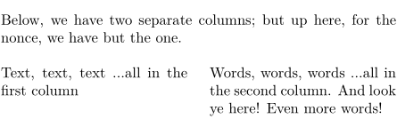

Contents
Summary
The command \columnbreak is used to break a column in multicolumn environments
Settings
| \columnbreak[...,...] | |
| [...,...] | yes no preference local force first last number name |
| Option | Explanation |
|---|---|
| Many of the options only work in column set environments
A missing argument is the same as 'yes'. |
|
| yes | move to the next column |
| preference | inserts a \goodbreak |
| local | move to the next nested column instead of the global column (only works in column sets) |
| force | just in case it doesn't work right away ... |
| first | move to the first column (only works in column sets forces a page break first) |
| last | move to the last column (only works in column sets) |
| number | move to this column number (only works in column sets, forces a page break first) |
| name | move to this named column (only works in column sets) |
Description
Go to the next column in a
\startcolumns
environment or in a
column set
environment.
Examples
Example 1
-
\setuppapersize[A6] \setupwhitespace[big] Below, we have two separate columns; but up here, for the nonce, we have but the one. \startcolumns[n=2] % Two columns, please Text, text, text \dots all in the first column \column Words, words, words \dots all in the second column. And look ye here! Even more words! \stopcolumns
- 
Notes
See also
- page-brk.mkiv
- \page to move to the next page
- \startcolumns for the columns environment
- \paragraph to move to the next column in a \startparagraph environment.